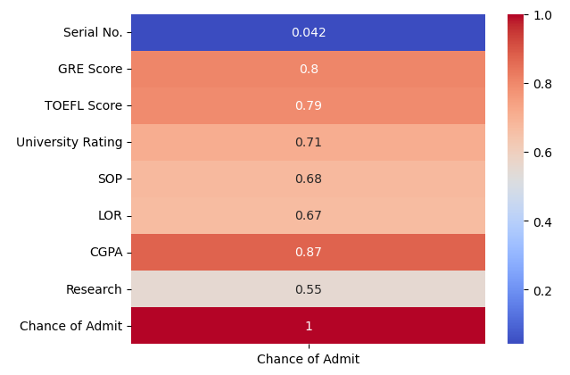

Admissions Insight
A new presentation format, feedback is welcome!
Project Motivation
I’m a data analyst now, but for much of my life I was a math teacher. I was a part-time math tutor all throughout undergrad, had my own classroom at a private school post-grad,
and even did a student-teacher placement at my old high school (try managing teenagers when pictures of your 17-year old self are publicly on display ha!). My strong suit was building strong
connections with my students and actively helping them figure out their post-secondary goals and careers. I found a lot of passion in sharing the lesser known aspects of university
applications— from how to use the publicly available admissions data to the importance of well rounded applications.
And while I no longer teach as much, this project is an extension of that passion (on top of being a showcase of Principal Component Analysis) as we study graduate acceptance rates
on a fictional school’s admissions data. Once again, we will see the importance of being a well-rounded applicant and the value of utilizing data to your advantage.
Background
Principal Component Analysis, or PCA for short, is a form of unsupervised machine learning
in which we apply a change of basis such that the dataset's greatest variances are emphasized, often
reducing noise and dimensionality as a result.
From a non-technical standpoint, PCA is an algorithim used to identify the most crucial
variables within a dataset—and simultaneously the most redundant ones. It is worth noting that while the algorithim can introduce
interpretability issues, it is still nevertheless the case that a dataset of orginally 15 variables could be reduced to just 5 in the event that
PCA exhibited the prescence of 10 redundant factors.
Objective
Given a dataset on Graduate School Admittance for a particular program, the goal is to gain an understanding of exactly how competitive entry into the program is as well as identify key areas candidates should prioritize and the qualities most highly valued by the admissions committee.
Dataset Context
Our dataset has 9 total columns, including the primary key "Serial No." and the target variable "Chance to Admit".
Canidate Serial Number
Graduate Record Examinations Scores ( out of 340 )
Test of English as a Foreign Language Scores ( out of 120 )
University Rating ( out of 5 )
Statement of Purpose Strength ( out of 5 )
Letter of Recommendation Strength ( out of 5 )
Cumulative Grade Point Average ( out of 10 )
Research Experience ( either 0 or 1 )
Chance of Admit ( ranging from 0 to 1 ).
Key Takeaways
CGPA is the most directly correlated with Chance of Admit
CGPA is the feature most directly correlated with the target variable, with a correlation coefficient of 0.87.
The next subsequently correlated features are GRE score and TOEFL score, with a correlational coefficient of 0.8 and 0.79, respectively.

Concluding the investigation at this point would suggest that applicants, especially domestic ones who don't need the TOEFL (0.79), should prioritize their CGPA (0.87) and
GRE (0.8) scores heavily, allocate a reasonable amount of time towards the qualitative aspects like Letter of Recommendation (0.67)
and State of Purpose (0.68), and consider gaining research experience (0.55) as an entirely optional asset.
While these suggestions are technically "data-driven", they would, in reality, be terrible advice and truly
illustrates the importance of exercising caution when solely relying on data to drive decision-making.
PCA Clustering & Analysis
Through the algorithim, we obtained two new axes we'll refer to as PC1 (Principal Component 1) and PC2 (Principal Component 2).
Together, this two dimensional measure accounts for 79.97% of the variances within our data, despite having 6 less dimensions than our pre-transformed dataset.
Again, it is worth noting that there are some interpretability asterisks at play here since the PCA algorithim, colloquially put, "Frankensteins"
variables together to generate PC1 and PC2. Nevertheless, PCA still provides a far more accurate representation of graduate school admission trends
compared to the correlation heatmap."
The PC1 axis can be interpeted as Academic Ability, with the greatest contributions being CGPA (-0.42), GRE Score (-0.40), TOEFL Score (-0.40), and University Rating (-0.39).
The stronger the canidate's academic ability (i.e competitive CGPA, high GRE, etc.), the further left they lie on the PC1 axis.
Moreover, they are all negative and are relatively
similar in magnitude, indicating that a very negative PC1 value implies competitive gpa, high GRE & TOEFL score, and a prestigious university.
However, it is worth noting CGPA carries slightly more weight amongst the factors.
The PC2 axis, on the other hand, is a reflection of the qualitative aspects of the canidates application. More specifically, PC2 represents the
combination of research experience, letter of recommendation strength, and statement of purpose strength.
However, we have to be extra careful with the interpretation of PC2 as
letter of recommendation (+0.45) and statement of purpose (+0.35) are rated positively while conversely
research experience is weighted negatively (-0.72) and nearly double in magnitude of LOR and SOP.
Meaning, canidates with no research experience but high scores on LOR and SOP would be placed towards the top of the grid;
canidates with research experience but low scores on LOR and SOP would be placed towards the bottom of the grid; and canidates with a balance of
the three will hover near 0.
As one would expect, those with 90%+ chances of being admitted are those with strong academic ability and a overall balanced portfolio of
statement of purpose, letter of recommendation, and prior research experience. I will indicate these canidates
as zone 1 applicants (annoted as "1"). However, what is more interesting is that within this golden zone, there are numerous
canidates with negative PC2 scores which as we recall, means their research experience provided stronger contribution towards
their application than the statement of purpose and letter of intent. And while of course this observation is under the assumption that
the canidate scored great academically, this analysis nevertheless highlights the significance of prior research experience despite having
only a correlational coefficient of 0.55.
Beyond the zone 1, we have what I called the "Reccomended Academically Competitive" vertical as well as zone 2 applicants, great canidates second
to only the strongest applicants we have. Like it's name suggest, the vertical represents the point in which canidates'
academic ability is no longer considered competitive. Furthermore, as we can see, having a strong academic portfolio is a primary criteria,
and thus the majority of the applicants beyond this vertical have a low (< 60%) chance of being admitted. That being said, there are visibly a handful
of applicants not meeting the vertical and yet still being given 60%-80% which suggests that the admissions committee must be willing to substitute
a lesser competitive academic portfolio for a stellar set of statement of purpose, recommendation letters, and prior research experience.
Zone 2 is the set of applicants who are strong academically, not within the 90th percentile however, but who have also maximized the
qualitative aspects of their canidacy as much as possible. For many students, academic ability is influenced by numerous socio-ecnomic factors and thus
zone 2 applicants are in some ways greater than zone 1 applicants. Students with lower household income for example, may have to work 20 hours a week
to support their tuition payments thus resulting in slightly lower CGPA or GRE or perhaps chose a
lower ranked school offering financial scholarships despite recieving offers from more prestigious schools.
For reference, I've included the loadings table below as well.
End
Thank you for taking the time to look at my work! I'm trying out a new format where I leave out process documentation
in favor of a more concise showcase of the results and analysis. That is, I left out the code and snippets of my Jupyter notebook
and instead focused more on the exposition of the results and providing some theory background. Feedback is welcome!
If you've never heard of Principal Component Analysis before, I tried to include many non-technical explanations
as possible and hope overall it was still digestable! If you're a seasoned PCA veteran, I hope I've given you a new use case for this algorthim!
Nevertheless, your time and attention means a lot, thank you, and I hope you have yourself a great day.